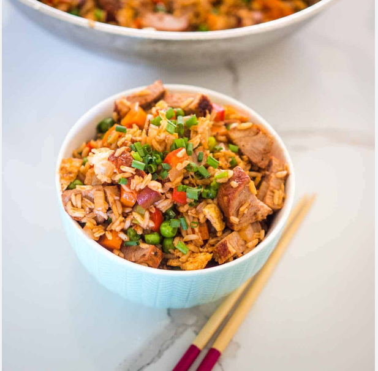

Duck Fried Rice

Easy peasy spicy savory fried-rice with duck meat
Ingredients
- Cooked rice
- Duck meat
- Kimchi
- Spring onion
- Cooking oil
Steps
- Chop the duck meat,kimch, and spring onions seperately
- Preheat the pan and put the right amount of oil on it
- Stir-fry duck meat until it gets enough duck oil
- Stir-fry spring onions until it smells good
- Add the chopped kimch and keep stir-frying until the kimchi colour gets partially brown.
- Add the rice when all the ingredients fully cooked
- Contiune stir-fry until all the ingredients are mixed well
- Pour the fried rice to an pretty bowl!